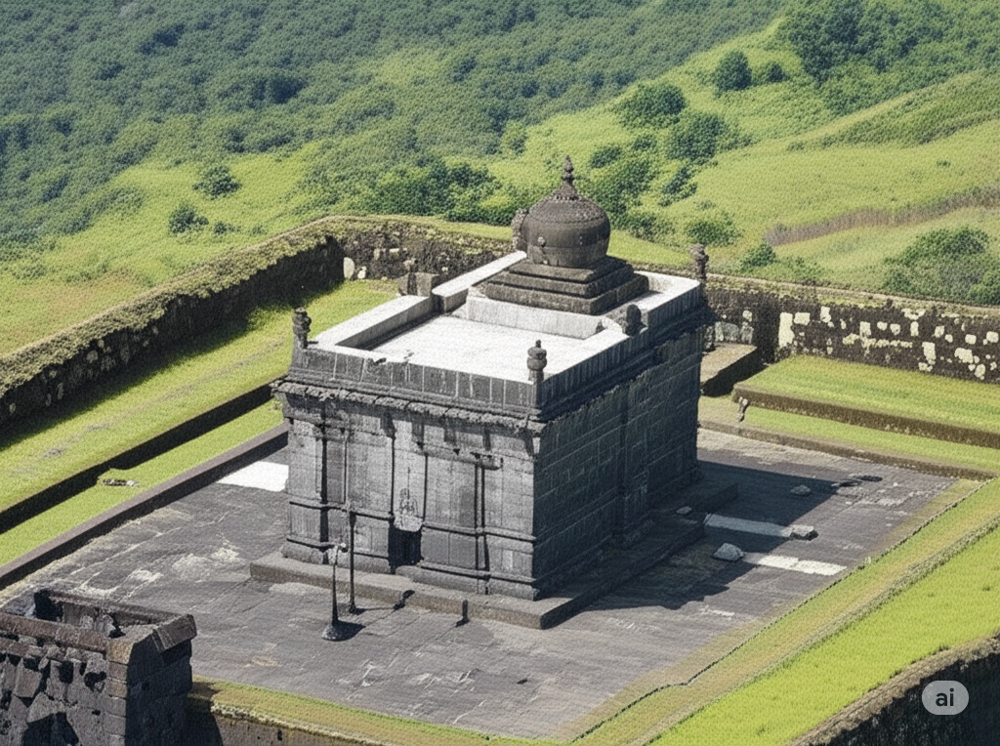

The Sacred Temple of Raigad Fort
Scroll Down
Jagadishwar Temple was built by Chhatrapati Shivaji Maharaj in the 17th century. It was his personal place of worship, showing his devotion. He regularly offered prayers here after court assemblies.
Constructed in the Hemadpanti style using black basalt rock. Features a carved mandapa, a tall shikhara, and an elevated courtyard. Faces east symbolizing light and knowledge.
The presiding deity is Lord Jagadishwar. A black stone idol is worshipped here. Shivaji Maharaj regarded Lord Jagadishwar as his kuldevata.
Shivaji Maharaj sought blessings here before his coronation in 1674. Festivals and rituals are still celebrated, preserving Maratha traditions.